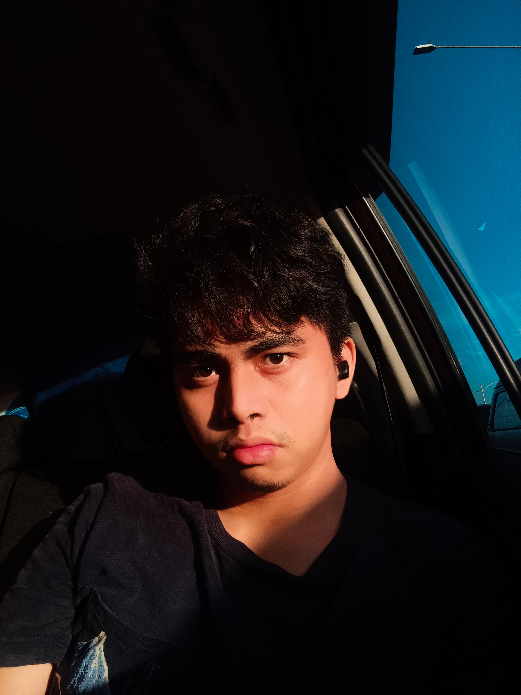

A comprehensive technical record of developing neural architectures, database pipelines, and interpretable deep learning workflows in ITC C508.
Course Expectation // Question A
Deep Learning & Predictive Transparency
In this BSIT course, students gain a comprehensive understanding of core information technology principles. The curriculum focuses on developing technical proficiency, critical thinking, and problem-solving skills necessary for the modern IT landscape. Students engage with complex neural architectures, database management, and strategies for addressing the "black box" challenge to improve model transparency, interpretability, and trustworthiness.
Course Expectation // Question B
Bridging Theory & Scalable Execution
The course aims to bridge the gap between theoretical mathematical models and practical execution. Expect a rigorous academic environment where collaboration and independent research are highly valued. By the end of this program, students are proficient in implementing scalable IT solutions with TensorFlow, Keras, and PyTorch while maintaining strict ethical standards and security best practices.
About Me // Profile
Iverson Labastida
Software engineering & BSIT student taking ITC C508 (Deep Learning & Neural Networks, with a focus on NLP). This portfolio tracks the experiments, model training loops, and IEEE reflective reports completed across the academic term.

Technical Focus & Specialization
Building scalable web services, full-stack architectures, and production-grade NLP systems. Focused on reproducible neural network pipelines, data validation, and interpretable machine learning.
PythonTensorFlow / KerasPyTorchNLP & EmbeddingsJupyter / ColabFull-Stack Systems
Applied NLP work—dense word embeddings, recurrent architectures, and sequence classification using LSTMs.
Midterm reports aren't posted yet
They'll appear here once each activity and its reflection are finished. In the meantime, the Prelims reports cover the work so far.
Period 03 // Finals
Finals Capstone Coursework
Retrieval-Augmented Generation (RAG) indexing, chunk-size and overlap optimization, vector search with FAISS, and quantized LLM evaluation.
Activity 01 · Week 12
PT-F1: Optimizing Chunk Size & Overlap
Built a two-component RAG pipeline over the 12-page DMW/POEA Source B guidance (50 chunks at 1,000/200 chars), audited chunk boundaries in Excel, and evaluated 4-bit quantized SEA-LION v3-8B-IT on a Tesla T4 GPU.
Benchmarked 12 chunking configurations (sizes 300–1,000, overlaps 0%–20%) across 20 verified evidence units with Precision@3, Recall@3, and MRR@3. Found C11 (1,000/100) outperformed the Part 1 baseline on all metrics.
Tuned Chroma chunking, top-k, and a stricter grounding prompt across 15 trilingual runs for AlalayOFW (PEOS + 3,792 DMW records) and benchmarked Tesla T4 GPU (>53× response speedup) against CPU timeouts.
Final project reflection and D1–D7 deliverables: architected and deployed the AlalayOFW Next.js 16 + ONNX hybrid RRF chatbot on Google Cloud Run (github.com/Iver-Labs/dmw-demo), passing 7/7 parity tests and achieving 33/33 (100%) live accuracy.
Comprehensive IEEE-formatted technical write-ups, model training curves, and reflective documentation for all completed exercises.
Prelims · Week 2
WW-P2: NLP Concepts
Reflected on token granularity trade-offs: word tokens preserve interpretability but struggle with out-of-vocabulary terms; character tokens inflate sequence length; sub-word tokenization strikes the optimal balance.
Attained 88.6% classification accuracy. Validated that feature extraction occurs during Learn & Test when tagged raw text is mapped into numerical vector indices before weight updates.
Documented how batch sizes and Adam learning rate schedules directly dictate gradient stability and validation loss convergence across training epochs.
Audited 1,000-character / 200-overlap FAISS retrieval on DMW/POEA guidance with 4-bit SEA-LION v3-8B-IT: 5/7 grounded hits, plus diagnostics on topic dilution and page-tail fragments.
Dual-PDF trilingual AlalayOFW study: 800/100 with k=3 and stricter prompt won 0.500 correctness & 4.9s answers, while T4 GPU beat CPU timeouts by >53×.
Individual contribution (MRM D6) and D1–D7 deliverables for AlalayOFW: Next.js 16 + ONNX Cloud Run deployment (Iver-Labs/dmw-demo), 7/7 parity tests, and 33/33 (100%) live accuracy.